Explore the divine beauty, sacred celebrations, and spiritual journey of Shri Siddhi Dhatri Shyamala Devi Temple.
Explore the sacred surroundings of Shri Siddhi Dhatri Shyamala Devi Temple, a serene spiritual center where devotees gather for worship, prayer, and divine blessings.
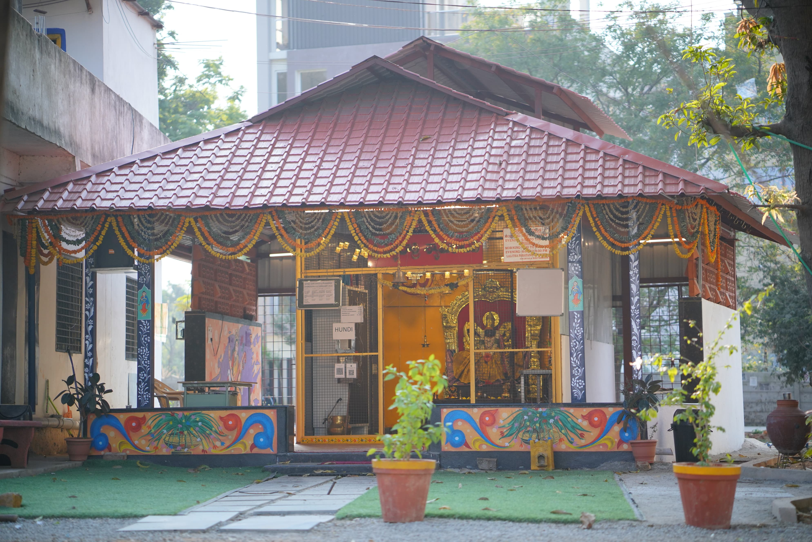
A welcoming view of the temple premises dedicated to Goddess Siddhi Dhatri Shyamala Devi.
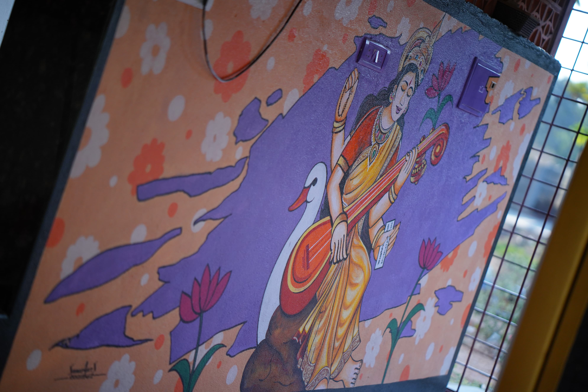
A glimpse of the temple architecture and peaceful surroundings.
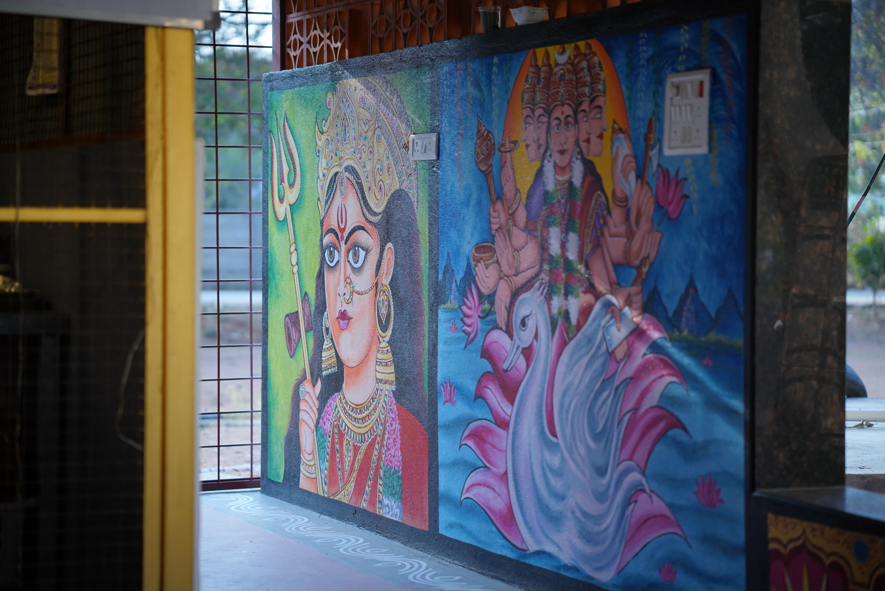
Showcasing the sacred atmosphere and beauty of the temple complex.
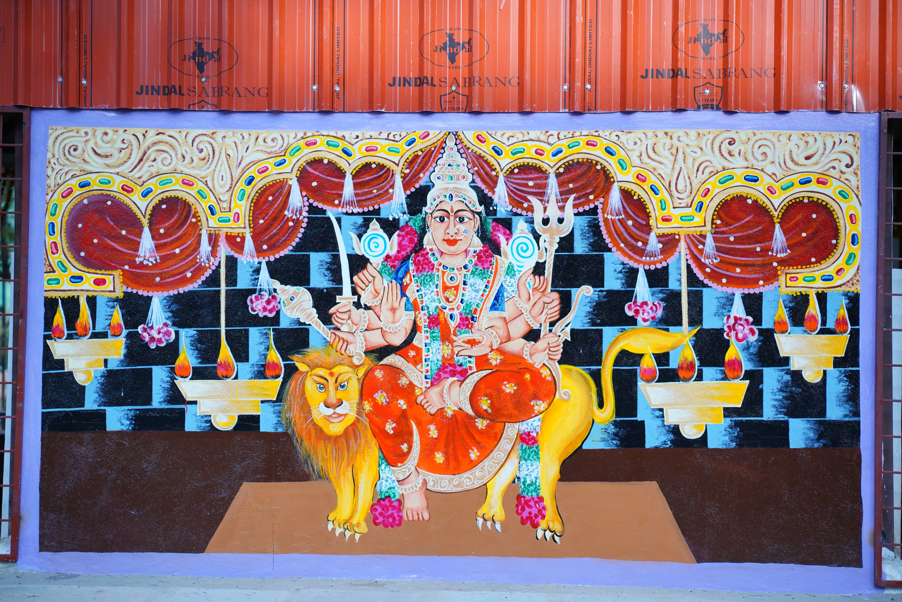
The backside view of the temple, offering a unique perspective of its architecture and surroundings.
Every Friday, special poojas are performed with devotion, including Kumkumarchana, Lalitha Sahasranama Parayanam, Maha Harathi, and Prasadam distribution.
Maha Harathi offered to Goddess Siddhi Dhatri Shyamala Devi during the Friday Special Pooja, illuminating the temple with devotion and divine grace.
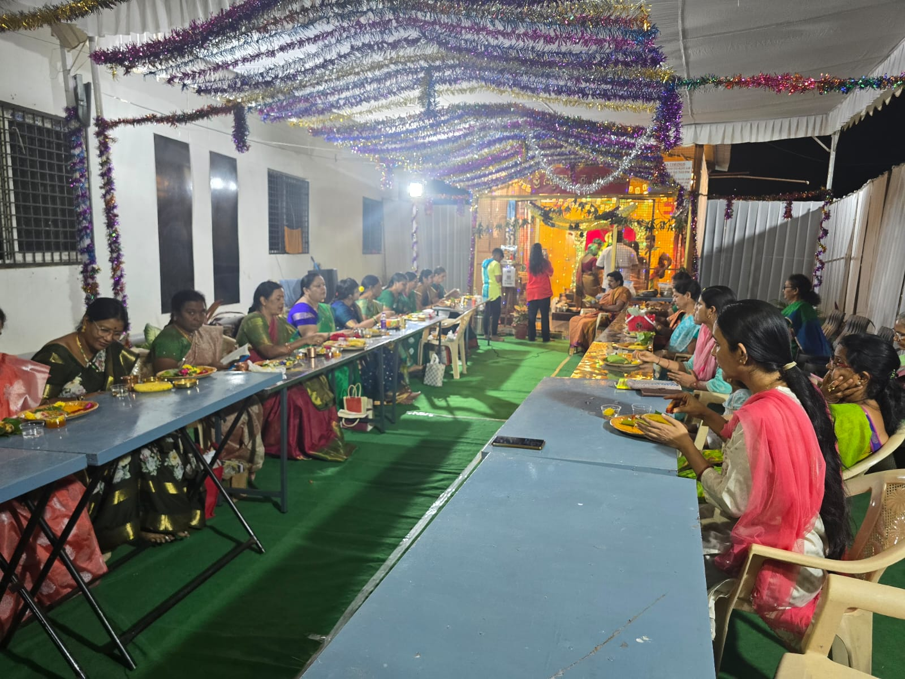
Devotees participate in the sacred Kumkumarchana seeking divine grace and blessings.
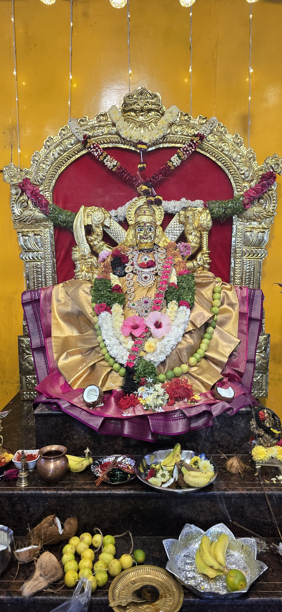
The Goddess beautifully adorned with flowers, ornaments, and traditional decorations.
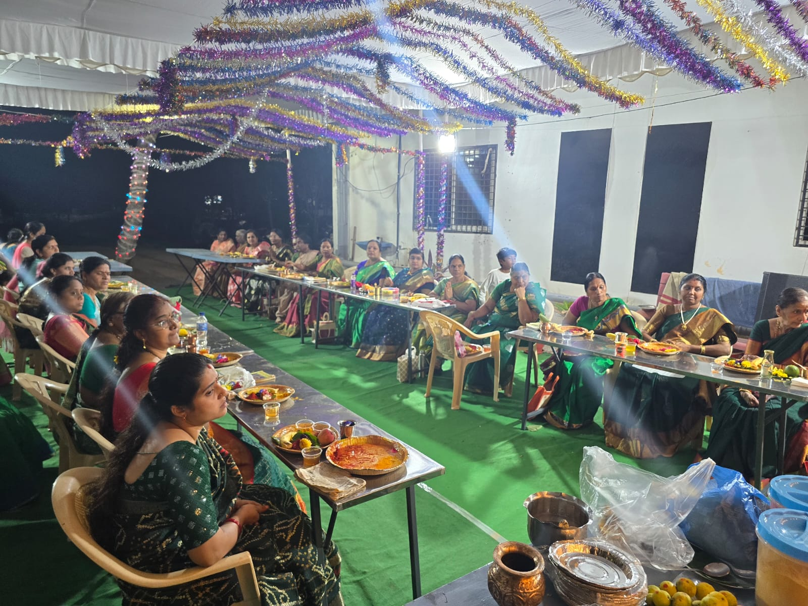
Devotees united in prayer and worship during the Friday celebrations.
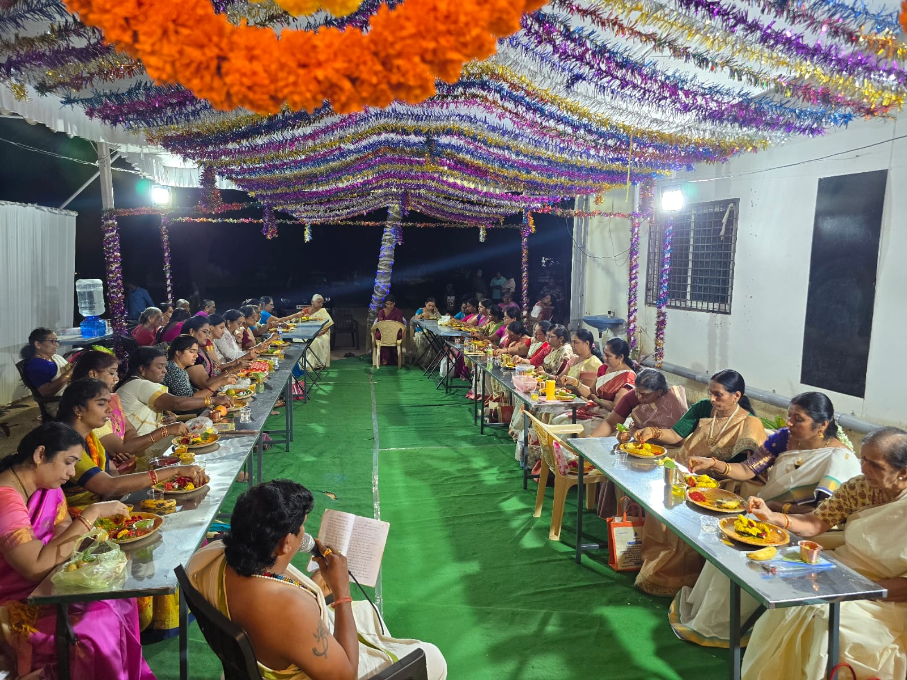
Traditional rituals performed with devotion and spiritual discipline.
A special worship dedicated to Goddess Saraswati, the divine embodiment of wisdom, learning, arts, and knowledge.
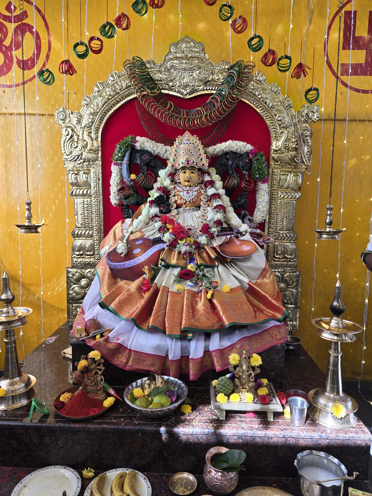
Devotees offer prayers seeking wisdom, academic excellence, creativity, and spiritual knowledge through the blessings of Goddess Saraswati.
Shyamala Navaratri Mahotsavam is one of the most significant celebrations at Shri Siddhi Dhatri Shyamala Devi Temple, bringing together devotion, culture, spirituality, and community participation in honor of the Divine Mother.
"Shyamala Navaratri is a sacred period of devotion, worship, spiritual awakening, and celebration dedicated to Goddess Siddhi Dhatri Shyamala Devi."
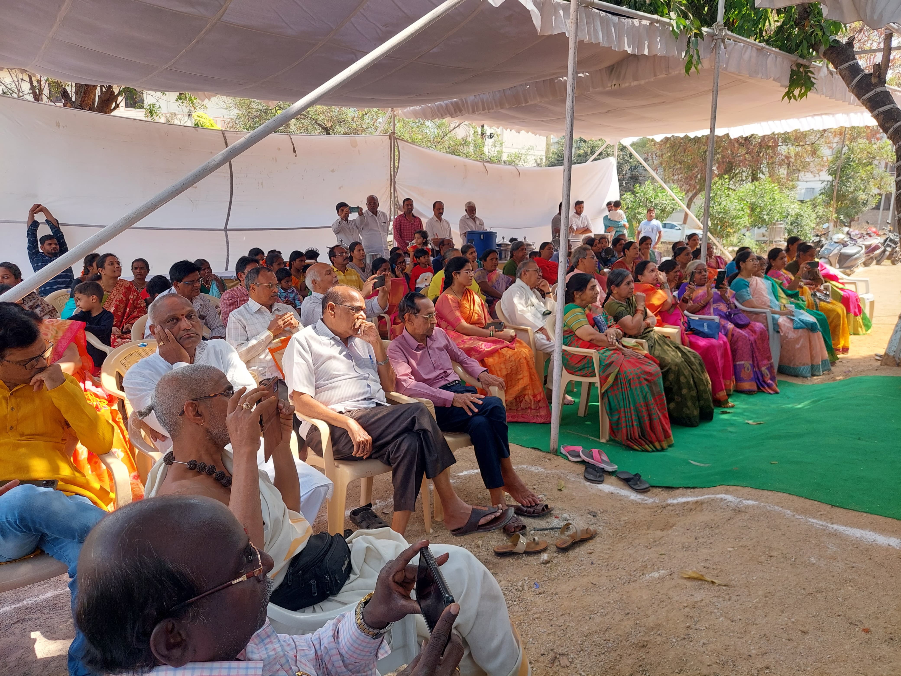
Devotees gathered in large numbers during Shyamala Navaratri Mahotsavam to participate in prayers, poojas, and spiritual celebrations.
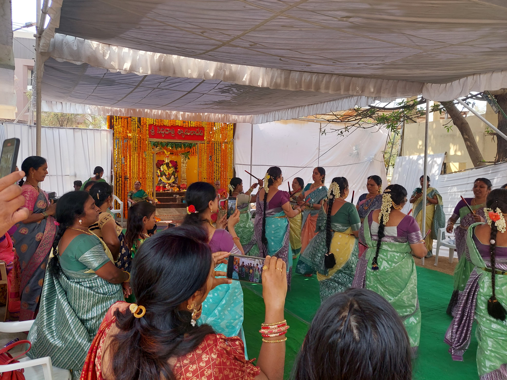
Women devotees performing the traditional Kolatam dance as part of the Navaratri celebrations, expressing devotion through culture and community participation.
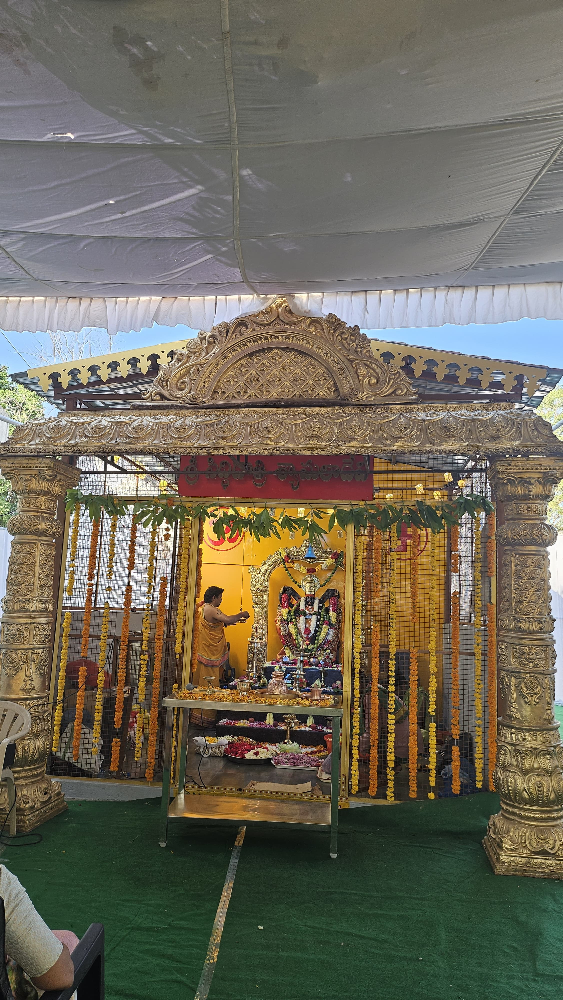
The temple beautifully decorated with flowers, lights, and festive adornments during the auspicious Shyamala Navaratri Mahotsavam.
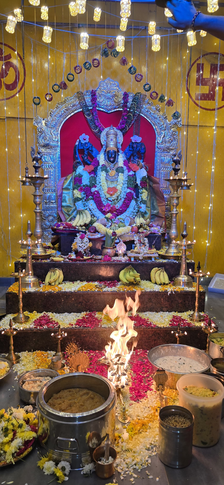
Goddess Siddhi Dhatri Shyamala Devi adorned with special alankaram and offered Maha Harathi, radiating divine grace and blessings to devotees.